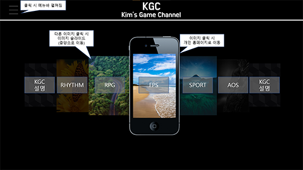

프로젝트 팀 구성 주제 게임 장르에 대한 정보 전달 팀명: KAB (Kim and Boys) 팀장: 전준영 팀원: 정민재, 김준현, 최병준, 김찬욱 팀 홈페이지명 KGC (Kim's Game Channel) https://kimandboys.netlify.app/ 팀 프로젝트 역할 전준영 - 메인 홈페이지 구축, 담당장르 FPS fps.gc (슈팅 게임 장르에 대한 뉴스 등 정보 전달) 정민재 - 사이트 보조 구축, 담당장르 SPORTS spo.gc (스포츠 게임 장르에 대한 뉴스 등 정보 전달) 최병준 - 사이트 구축 (미디어 쿼리 작업), 담당장르 AOS aos.gc (AOS 게임 장르에 대한 뉴스 등 정보 전달) 김준현 - 사이트 메인 구축, 담당장르 RPG rpg.gc (RPG 게임 장르에 대한 뉴스 등 정보 전달) 김찬욱 - 사이트 보조 구축, 담당장르 RHYTHM rtm.gc (리듬 게임 장르에 대한 뉴스 등 정보 전달) 개인 홈페이지 링크 김준현: https://0218banana.netlify.app/ 전준영: https://welljunyoung.netlify.app/portfolio.html 최병준: https://wellbyoungjun.netlify.app/ 정민재: https://www.naver.com/ 프로젝트 초기 도안 프로젝트 초기 도안 사진4개  위 사진대로 만들 예정입니다 프로젝트 완성 프로젝트 완성본 사진4개